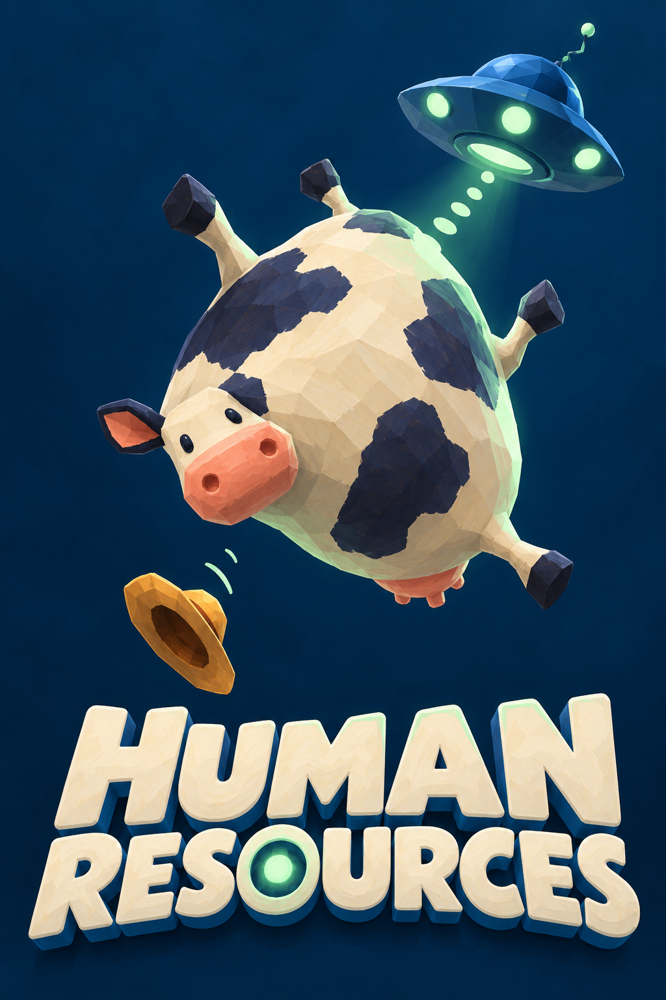
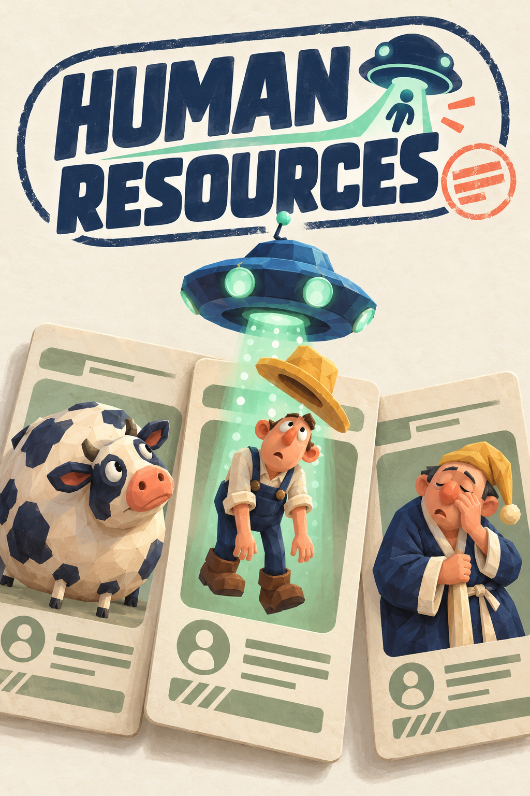
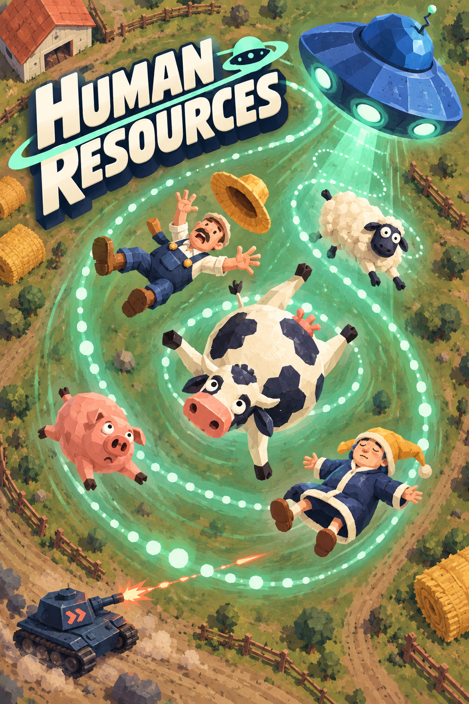
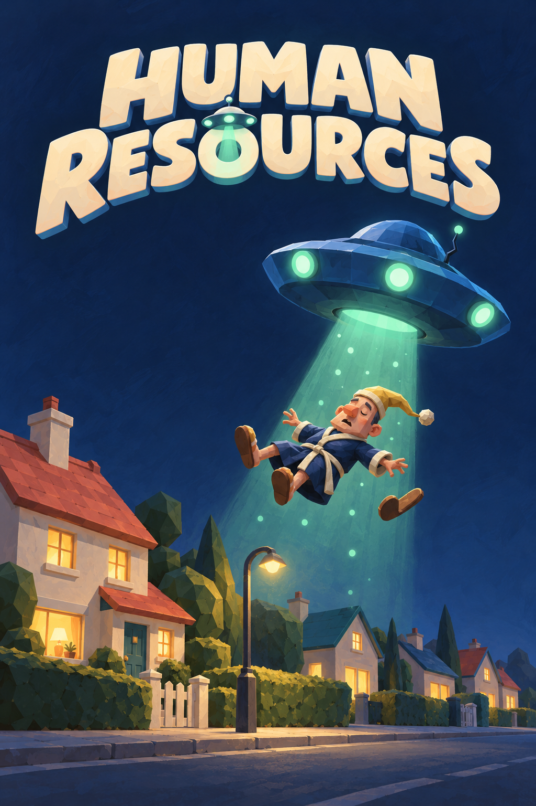
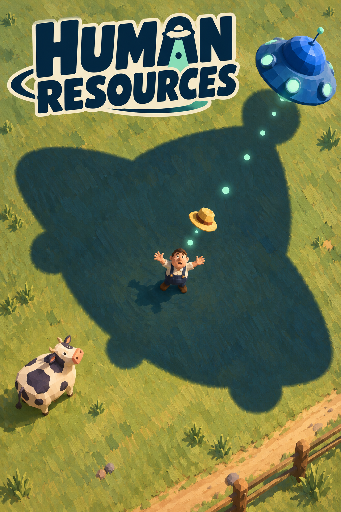
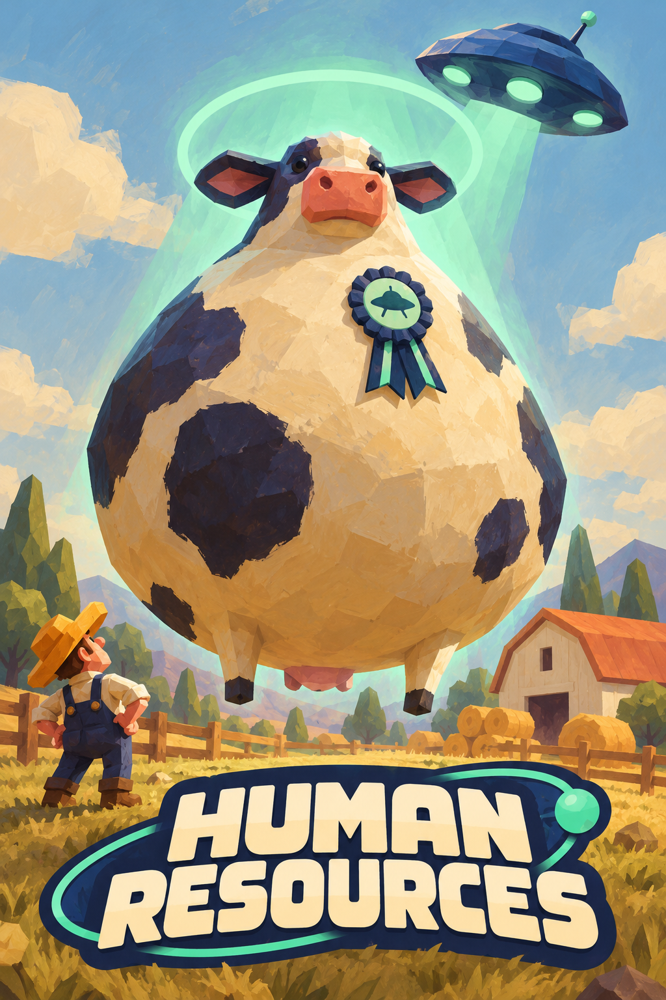
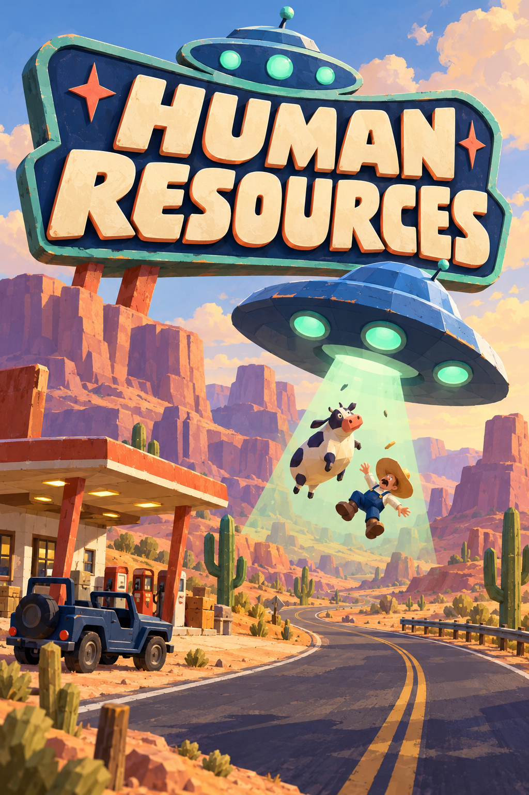
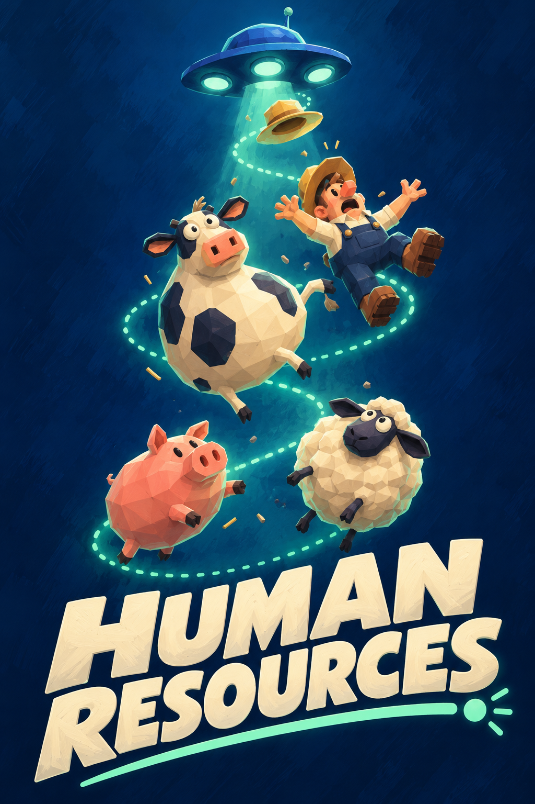
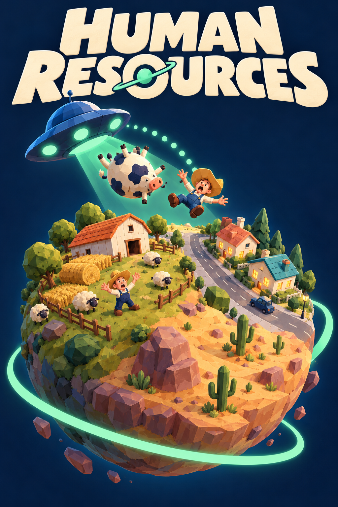

01The Perfect Hire
One helpless cow, one little saucer, one instantly readable joke. The strongest candidate for a small store thumbnail.
Tradeoff: Less sense of the wider world and the military chase.
Hand-painted low-poly forms, absurd proportions, cobalt saucers and mint capture effects. Every concept includes an integrated logo treatment. Click a cover to inspect it at full size.
My shortlist: 01 for store-thumbnail clarity · 02 for the strongest brand idea · 04 for atmosphere · 05 for action. These are creative judgments, before audience testing.

One helpless cow, one little saucer, one instantly readable joke. The strongest candidate for a small store thumbnail.
Tradeoff: Less sense of the wider world and the military chase.

Makes the title's HR joke explicit: abduction becomes recruitment. The most distinctive brand premise.
Tradeoff: The paperwork metaphor puts less emphasis on action.

Turns the game's collecting loop into a big spiral of comic motion. Best for conveying abundance and momentum.
Tradeoff: Needs careful simplification when cropped very small.

A sleepy suburban abduction becomes a quiet visual joke. Best for atmosphere and a warmer, more unusual tone.
Tradeoff: Its calm mood undersells the game's faster action.

Pitches the game as a comic chase. Best for immediate excitement and showing the military threat.
Tradeoff: The busiest and most action-led option.

Uses absence as the joke: a giant saucer shadow, one farmer, and his hat. Best for a striking, restrained poster.
Tradeoff: More mysterious; says less about collecting animals.

Gives the game a mascot: a cow taking recruitment far too seriously. Best for character recognition and comic personality.
Tradeoff: Could make players expect the cow to be the protagonist.

Turns the desert setting into a strange destination worth visiting. Best for a memorable world and a vintage poster feel.
Tradeoff: The most location-specific pitch.

Builds a clean visual rhythm out of recruits rising toward the saucer. Best for portrait formats and communicating the upward pull.
Tradeoff: Shows less environment and danger.

Puts farm, suburb, and desert into one tiny world to harvest. Best for showing scope and supporting a lasting game identity.
Tradeoff: Its world metaphor is less literal than the gameplay.